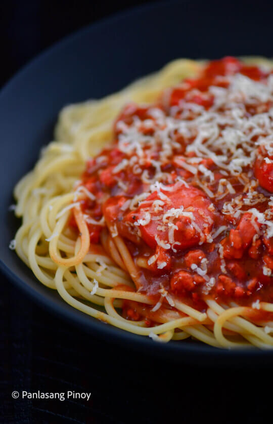

Pinoy Style Spaghetti

If you’ve ever had a bite of Filipino Spaghetti, you would know that it can taste pretty different compared to the classic version. That’s because we’ve got a whole lot more sweetness as a result of Filipino style spaghetti sauce.
This is a lot meatier too because we definitely will not be cutting back on that type of ingredient. We’ve got some deliciously savory hotdogs, ground pork and ham. What I also incorporated in this recipe to distinguish it from some other Filipino spaghetti dishes is a boost of crunchiness with a mix of subtle sweetness. We’ve got red and green bell peppers for our recipe too.
Ingredients
- 1 lb. spaghetti noodles
- 1 lb. ground pork
- 35 ounces Filipino style spaghetti sauce
- 1 Knorr Pork Cube
- 3 ounces ham sliced
- 5 hotdogs sliced diagonally
- ½ cup red bell pepper minced
- ½ cup green bell pepper minced
- 1 yellow onion minced
- 4 cloves garlic minced
- 8 cups water
- 1 cup shredded cheddar cheese
- 3 tablespoons cooking oil
- Salt and ground black pepper to taste
Steps
- Boil water in a cooking pot. Add a teaspoon of salt. Put the spaghetti noodles in the pot. Cook according to package instructions. Drain the water and set the spaghetti aside.
- Make the sauce by heating oil in a cooking pot. Sauté garlic and onion until the onion softens.
- Add the ground pork. Cook it while stirring until it turns light brown in color.
- Add the ham and hotdogs. Sauté for 2 minutes.
- Put the bell peppers into the pot. Continue cooking for 1 minute.
- Pour the spaghetti sauce. Add 1 cup water. Stir and let boil.
- Add Knorr pork cube. Cover the pot and reduce the heat to a simmer. Cook for 30 minutes while stirring every 6 minutes or so.
- Season with salt and ground black pepper. You can add some grated cheese
- Arrange spaghetti on a serving plate. Top with spaghetti sauce and shredded cheese.
- Serve. Share and enjoy!